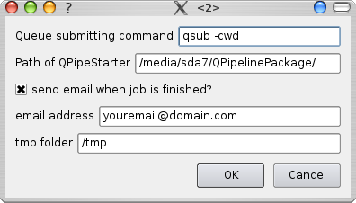

Index
Index

Preferences
|  | In this dialog, you can change general settings for QuEasyViz as well as settings for directly submitting pipelines to a cluster. Note that the second group of options will only have an effect if you run QuEasyViz on a cluster-frontend and submit pipelines to the cluster. I.e., if you run this program on a single workstation or laptop, you do not need to bother with them. |
General settings
A temporary folder that is to be used when extracting files from archives can be set in (a). If you do not want this documentation to be shown at every start-up of QuEasyViz, just uncheck (b).
Cluster submit settings
The queue submit command, including necessary parameters, needs to specified in (c). Command and parameters depend on the type of your grid engine.If QuEasyRun is not installed globally (not in a location part of your 'PATH' enviroment-variable), then the full path to it should be entered in (d).
If you would like to receive an email when the execution of your pipeline on the cluster has finished, check (e) and enter your email address in (f). Note however that this will only work if the program sendmail is installed on the cluster and configured properly.